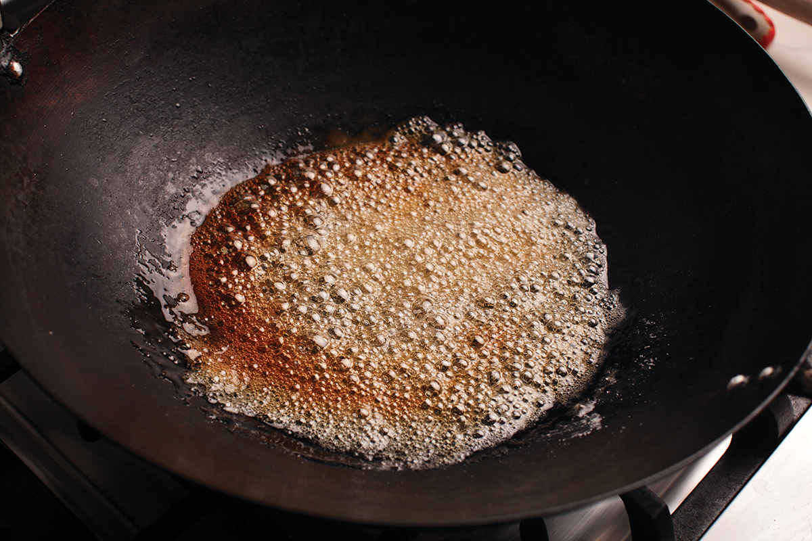
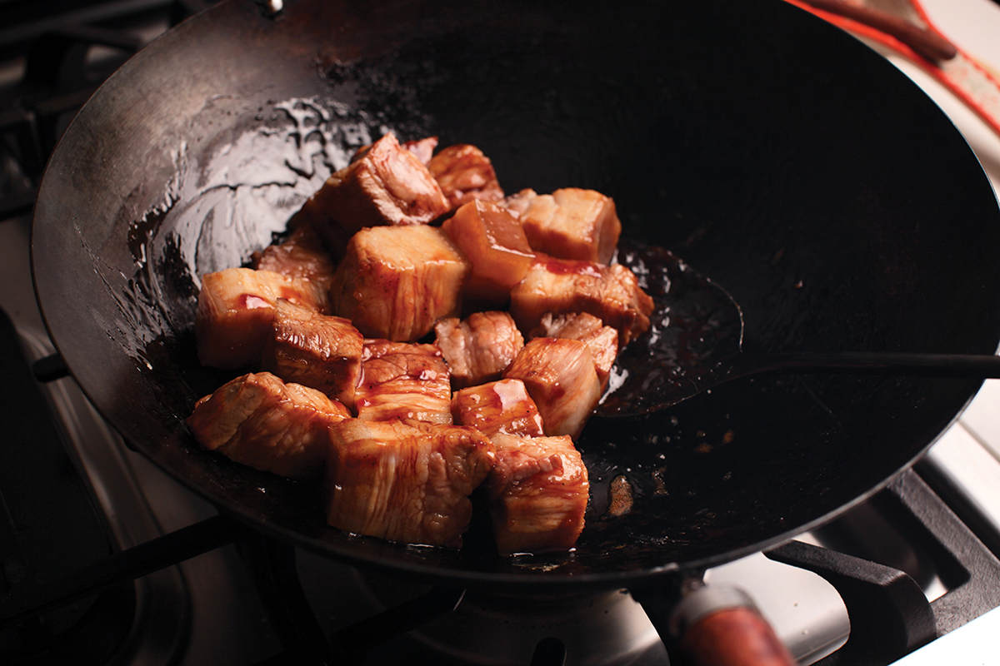
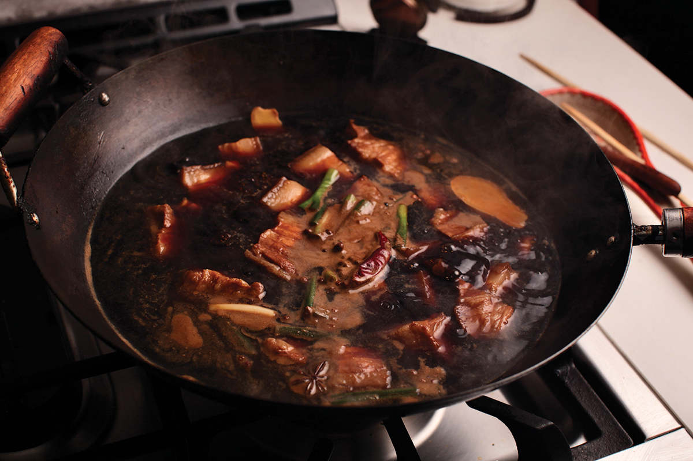
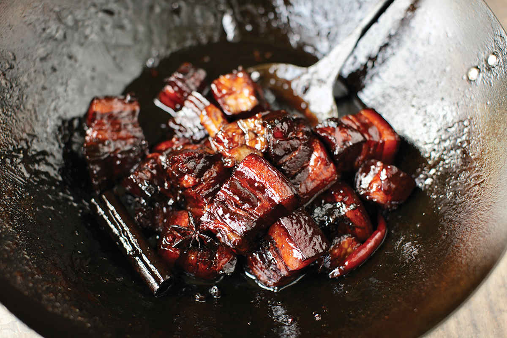

RED BRAISED PORK BELLY (HONG SHAO ROU)
|
Yield Serves 6 to 8 |
Active Time 25 minutes Total Time 2 hours |
Look for pork belly with a good mix of fat and lean. Pork belly should come clean, but sometimes it’ll have a few stray hairs. To remove them, you can pass a blowtorch over the surface and then scrub it under water with a stiff-bristled brush or scouring pad, or you can rub the skin side on the surface of a smoking-hot wok.
INGREDIENTS
2 pounds (900 g) rind-on fresh pork belly (see Note)
2¼ ounces (about ⅓ cup/60 g) sugar
1 tablespoon (15 ml) water
¼ cup (60 ml) Shaoxing wine
2 tablespoons (30 ml) dark soy sauce
2 tablespoons (30 ml) light soy sauce
Aromatics (optional):
2 scallions, roughly chopped
2 slices fresh ginger (5 g)
2 medium garlic cloves (5 g), smashed
1 star anise pod
1 cinnamon stick
1 teaspoon Sichuan peppercorns
1 small dried hot chile, such as Sichuan chao tian jiao or árbol
This homestyle braised dish, popular throughout China, is a prime example of how a few simple ingredients can create complex flavors. The aromatics added to it add an extra layer of flavor but are completely optional. Even with just sugar, dark and light soy sauce, and Chinese wine, you’ll end up with a deliciously sweet-and-savory stew with chunks of fatty pork that melt in your mouth. The flavor and texture profile reminds me an awful lot of burnt ends paired with a sticky-sweet barbecue sauce that has caramelized a bit around the edges. (And if you want to lean into that, red braised pork belly goes great with pickles, slivered onions, and some slices of white bread.)
DIRECTIONS
1 Place the pork belly in a wok and add water to cover. Bring to a boil over high heat. Reduce to a simmer and cook for 5 minutes. Transfer the pork belly to a cutting board and let it rest until cool enough to handle. Meanwhile, rinse and wipe out the wok.
2 When the pork is cool enough to handle, cut it into 1½-inch cubes. Set aside.
3 Make the Caramel: Add the sugar to a wok and add tablespoon of water. Cook over medium heat, swirling to promote even browning, until the sugar melts into a syrup and cooks down to a dark amber color, about 5 minutes total. Add the pork belly to the caramel and cook, stirring, until the pork is coated all over in the mixture and starting to brown around the edges, about 2 minutes.
4 Add the wine and stir until the caramel is dissolved, scraping up any browned bits from the bottom of the wok. Add the dark and light soy sauce, then add enough fresh water to barely cover the pork. Add the aromatics (if using), bring the mixture to a boil over high heat, reduce to a bare simmer, cover, and cook, stirring occasionally, until the pork belly is completely tender, about 1½ hours, stirring occasionally to promote even cooking.
5 When the pork is tender, remove the lid and continue cooking, stirring occasionally, until the sauce has reduced to a sticky glaze that coats the pork. Transfer to a serving platter and serve.



